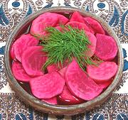

|
Salt Pickled Turnips with BeetLevant - Kabees Lift (Lebanon) | ||||
| Makes: Effort: Sched: DoAhead: |
1/2 galon ** 3+ weeks Must |
This appetizer / condiment is very popular throughout the Levant and beyond. This recipe is a natural salt pickled version with no vinegar used - just like real German / Polish sauerkraut and Korean Kimchee (see Note-3). Some recipes allow up to 2 T Sugar, but most allow no sugar. This recipe is sized to fit in a 1/2 gallon Kimchee jar. | |||
|
|
2 7 2.6 4 ar |
# oz oz c |
Turnips (1) Beet Sea Salt (2) Water Brine (4) |
Make - (2+ weeks - 25 min work)
|